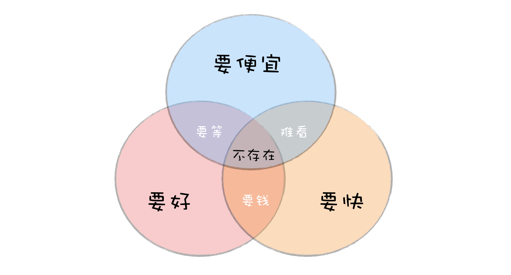
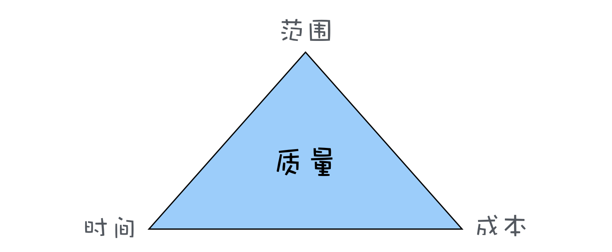
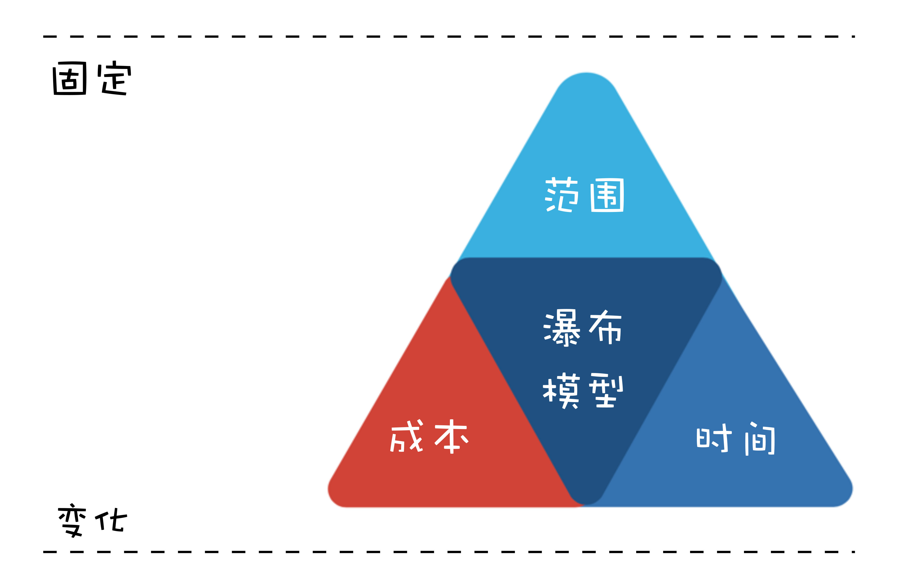
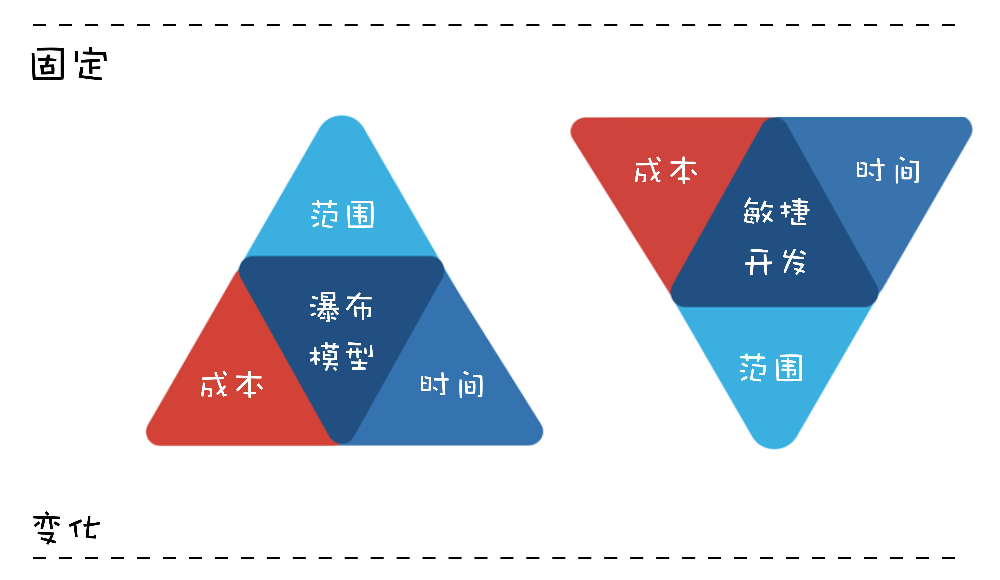

- 000 开篇词 卓越的团队，必然有一个卓越的领导者.md
- 001 你的能力模型决定你的职位.md
- 002 七位CTO纵论技术领导者核心能力.md
- 003 CEO实话实说：我需要这样的CTO.md
- 004 技术领导者不等于技术管理者.md
- 005 CTO的三重境界.md
- 006 像CEO一样思考.md
- 007 要制定技术战略，先看清局面.md
- 008 技术领导力就是成事的能力.md
- 009 CTO是商业思维和技术思维交汇的那个点.md
- 010 创业公司CTO的认知升级.md
- 011 最合适的技术才是最有价值的技术.md
- 012 谈谈CTO在商业战略中的定位.md
- 013 把脉高效执行的关键要素.md
- 014 从零开始搭建轻量级研发团队.md
- 015 定制高效研发流程.md
- 016 培养中层团队的管理认知.md
- 017 团队成长要靠技巧和体系.md
- 018 做到这四点，团队必定飞速成长.md
- 019 将企业打造成一所终身大学.md
- 020 论团队管理与共同升级.md
- 021 绩效管理的目标不仅仅是绩效考核.md
- 022 验证研发团队价值的绩效考核机制.md
- 023 产品技术团队OKR使用法则.md
- 024 996、987，程序员加班文化你怎么看？.md
- 025 建立有效的员工淘汰机制.md
- 026 让细节的病毒感染你的团队.md
- 027 如何在不同组织文化下推行技术管理.md
- 028 业务高速增长期的团队管理：知轻重、重绸缪、调缓急.md
- 029 被8成的人误解的工程师文化.md
- 030 关于工程师文化的六个问题.md
- 031 五位技术领导者的文化构建实战.md
- 032 文化是管理的那只无形之手.md
- 033 选对的人，做正确的事情.md
- 034 打好技术团队搭建的基础.md
- 035 做个合格的技术岗位面试官.md
- 036 高潜力人才的内部培养.md
- 037 技术创业该如何选择赛道.md
- 038 CTO要掌握的产品哲学：理性与人性的权衡.md
- 039 从客户价值谈技术创新.md
- 040 技术人投身创业公司之前，应当考虑些什么？.md
- 041 技术人创业前要问自己的六个问题.md
- 042 团队激励之分配好你的奖金.md
- 043 通过积分考核提升技术团队的绩效.md
- 044 空降技术高管的择业七计.md
- 045 选好人生下一站–CTO空降上篇.md
- 046 走出至暗时刻–CTO空降下篇.md
- 047 空降领导者平稳落地要做的四道题（上）.md
- 048 空降领导者平稳落地要做的四道题（下）.md
- 049 打造高效的研发组织架构：高效研发流程那些事（一）.md
- 050 你的研发流程符合你的组织架构吗？谈高效研发流程那些事（二）.md
- 051 聊聊研发流程管理中的那些坑：高效研发流程那些事（三）.md
- 052 数据如何驱动研发高效运转？谈高效研发流程那些事（四）.md
- 053 如何打造高效且敏捷的组织文化？谈高效研发流程那些亊（五）.md
- 054 打造高速运转的迭代机器：现代研发流程体系打造（一）.md
- 055 用机器打造迭代机器：现代研发流程体系打造（二）.md
- 056 有了敏捷开发，那交付期限去哪儿了？.md
- 057 敏捷中的期限之殇，软件业该怎么做？.md
- 058 如何打造个人技术品牌？.md
- 059 技术演，有章可循.md
- 060 正确对待技术演中的失误.md
- 061 刘俊强：技术最高决策者应该关注技术细节吗 .md
- 062 张溪梦：技术领袖需要具备的商业价值思维.md
- 063 未来组织形态带来的领导力挑战.md
- 064 如何判断业务价值的高低.md
- 065 如何打造高效的分布式团队？.md
- 066 如何打造有活力、持续创新的研发团队？.md
- 067 如何打造独属自己的工程师文化？.md
- 068 如何打造一个自组织团队？.md
- 069 茹炳晟：QE团队向工程效能团队转型的实践之路.md
- 070 技术、产品、管理的不同视角.md
- 071 什么样的人适合考虑管理角色.md
- 072 创业公司如何招到合适的人才.md
- 073 用数据来分析管理员工.md
- 074 为什么给了高工资，依然留不住核心员工？.md
- 075 刘俊强：一本正经教你如何毁掉一场技术演.md
- 076 内部技术会议的价值.md
- 079 程军：从0到1打造高效技术团队的方法论.md
- 080 技术Leader的持续成长.md
- 081 游舒帆：一流团队必备的商业思维能力.md
- 082 游舒帆：数据力，透过数据掌握公司经营大小事.md
- 083 游舒帆：运营力，让用户出现你期待的行为.md
- 084 游舒帆：策略力，让目标与行动具备高度一致性.md
- 085 游舒帆：敏捷力，拥抱不确定性，与VUCA共舞.md
- 086 刘俊强：管理者必备的高效会议指南（上）.md
- 087 刘俊强：管理者必备的高效会议指南（下）.md
- 088 刘俊强：做好一对一沟通的关键要素（上）.md
- 089 刘俊强：做好一对一沟通的关键要素（下）.md
- 090 程军：打造高效技术团队之招人.md
- 091 程军：打造高效技术团队之做事.md
- 092 成敏：技术负责人如何做优先级决策.md
- 093 兰军：团队研发效率低下的要因分析.md
- 094 兰军：提升产品团队研发效率的实践（上）.md
- 095 兰军：提升产品团队研发效率的实践（下）.md
- 096 阿禅：工程师转型产品经理可能踩到的坑.md
- 097 阿禅：工程师转型产品经理的必备思维.md
- 098 徐裕键：业务高速增长过程中的团队迭代.md
- 099 徐裕键：业务高速增长过程中的技术演进.md
- 100 徐裕键：团队文化建设，保持创业公司的战斗力.md
- 101 刘俊强：领导力提升指南之培养积极的态度.md
- 102 姚从磊：巧用AARRR模型，吸引优秀技术人才（一）.md
- 103 姚从磊：巧用AARRR模型，吸引优秀技术人才（二）.md
- 104 姚从磊：巧用 AARRR 模型，吸引优秀技术人才（三）.md
- 105 姚从磊：巧用 AARRR 模型，吸引优秀技术人才（四）.md
- 106 程军：技术人的「知行合一」（一）.md
- 107 刘俊强：消除压力的七种方法.md
- 108 谢呈：技术高手转身创业的坑和坡.md
- 109 谢呈：关于垂直互联网创业的一些经验之谈.md
- 110 成敏：创业公司为什么会技术文化产品缺失.md
- 111 蔡锐涛：从0到1再到100，创业不同阶段的技术管理思考.md
- 112 刘俊强：必知绩效管理知识之绩效管理循环.md
- 113 程军：技术人的「知行合一」（二）.md
- 114 成敏：谈谈不同阶段技术公司的特点.md
- 115 成敏：打造优秀团队与文化的三个推手.md
- 116 刘俊强：必知绩效管理知识之绩效目标的制定.md
- 117 程军：技术人的「知行合一」（三）.md
- 118 吴铭：成本评估是技术leader的关键素质.md
- 119 汤力嘉：CTO如何进行产品决策（一）.md
- 120 刘俊强：必知绩效管理知识之绩效数据收集（上）.md
- 121 刘俊强：必知绩效管理知识之绩效数据收集（下）.md
- 122 黄伟坚：创业中那些永远回避不了的问题.md
- 123 黄伟坚：用系统性思维看待创业.md
- 124 刘俊强：必知绩效管理知识之评定绩效.md
- 125 洪强宁：从程序员到架构师，从架构师到CTO（一）.md
- 126 洪强宁：从程序员到架构师，从架构师到CTO（二）.md
- 127 刘俊强：必知绩效管理知识之绩效沟通（一）.md
- 128 王坚：年轻人永远是创新的主体.md
- 129 刘俊强：必知绩效管理知识之绩效沟通（二）.md
- 130 刘俊强：必知绩效管理知识之绩效沟通（三）.md
- 131 汤力嘉：CTO如何在产品方面进行决策（二）.md
- 132 徐函秋：转型技术管理者初期的三大挑战（一）.md
- 133 徐函秋：转型技术管理者初期的三大挑战（二）.md
- 134 刘建国：我各方面做得都很好，就是做不好向上沟通.md
- 135 钮博彦：软件研发度量体系建设（一）.md
- 136 钮博彦：软件研发度量体系建设（二）.md
- 137 成敏：创业者不要成为自己公司产品技术文化的破坏者.md
- 138 于艺：以生存为核心，B端产品的定位心法.md
- 139 成敏：创业者应该具备的认知与思维方式.md
- 140 袁店明：创业产品必须迈过的鸿沟.md
- 141 徐毅：五星级软件工程师的高效秘诀（一）.md
- 142 徐毅：五星级软件工程师的高效秘诀（二）.md
- 143 徐毅：技术Leader应该具备的能力或素质.md
- 144 于艺：如何提升自己的能力与动力.md
- 145 李列为：技术人员的商业思维.md
- 146 刘天胜：打造高效团队，关键在于平衡人、事和时间（一）.md
- 147 刘天胜：打造高效团队，关键在于平衡人、事和时间（二）.md
- 148 肖德时：创业团队技术领导者必备的十个领导力技能（上）.md
- 149 肖德时：创业团队技术领导者必备的十个领导力技能（下）.md
- 150 暨家愉：技术人如何快乐的自我成长（上）.md
- 151 暨家愉：技术人如何快乐的自我成长（下）.md
- 152 施翔：如何打造7 24高效交付通道（上）.md
- 153 施翔：如何打造7 24高效交付通道（下）.md
- 154 谢东升：说说技术管理者从外企到民企的挑战.md
- 155 王可光：如何搭建初创团队之人才关.md
- 156 成敏：技术人转型管理的两大秘诀.md
- 157 成敏：技术人才的管理公式.md
- 158 胡峰：人到中年：失业与恐惧.md
- 159 黄云：技术管理者如何科学的做好向上管理.md
- 160 胡键：创业公司需要高凝聚力高绩效的技术团队.md
- 161 卢亿雷：企业发展的不同阶段，该如何打造高效的研发流程体系.md
- 162 王海亮：提升技术团队效率的5个提示（上）.md
- 163 王海亮：提升技术团队效率的5个提示（下）.md
- 164 陈崇磐：心理成熟度 - 创业公司识人利器.md
- 165 陈崇磐：管事与管人 - 如何避开创业公司组队陷阱.md
- 166 俞圆圆：合格CTO应该做好的5件事（上）.md
- 167 俞圆圆：合格CTO应该做好的5件事（下）.md
- 168 余加林：从技术人到创业合伙人必备的三个维度的改变.md
- 169 高琦：如何给研发打绩效不头疼而又公正？（上）.md
- 170 高琦：如何给研发打绩效不头疼而又公正？（下）.md
- 171 邱良军：如何有效地找到你心仪的人才.md
- 172 于人：研发团队人均产能3年提升3.6倍的秘诀（上）.md
- 173 于人：研发团队人均产能3年提升3.6倍的秘诀（下）.md
- 174 邱良军：打造高效技术团队，你准备好了吗！.md
- 175 邱良军：打造高效技术团队的人才招聘攻略.md
- 176 胡键：创业公司如何打造高凝聚力高绩效的技术团队：组织篇.md
- 177 胡键：创业公司如何打造高凝聚力高绩效的技术团队：工具篇.md
- 178 马连浩：用人的关键在于用人所长，而非改人之短.md
- 179 张矗：技术管理者必经的几个思维转变.md
- 180 钟忻：成为温格-聊聊如何当好CTO.md
- 181 姚威：技术团队管理中关于公平的五个核心准则.md
- 182 谢文杰：区块链的下一个十年.md
- 183 薛文植：技术管理的本质-要做尊重人性的管理.md
- 184 狼叔：2019年前端和Node的未来-大前端篇（上）.md
- 185 狼叔：2019年前端和Node的未来-大前端篇（下）.md
- 186 赵晓光：如何培养团队竞争力（上）.md
- 187 赵晓光：如何培养团队竞争力（下）.md
- 188 张嵩：从心理学角度看待小中型团队的管理.md
- 189 狼叔：2019年前端和Node的未来-Node.js篇（上）.md
- 190 狼叔：2019年前端和Node的未来-Node.js篇（下）.md
- 191 肖冰：如何建立高信任度的团队.md
- 192 崔俊涛：如何做好技术团队的激励（上）.md
- 193 崔俊涛：如何做好技术团队的激励（下）.md
- 194 刘俊强：2019年云计算趋势对技术人员的影响.md
- 195 吴晖：企业B2B服务打磨的秘诀-ESI.md
- 196 邱良军：关于做好技术团队管理的几点思考.md
- 197 邱良军：做好研发管理的3个关键.md
- 198 徐林：通过快速反馈建立充满信任的技术团队.md
- 199 宝玉：怎样平衡软件质量与时间成本范围的关系？.md
- 200 邱良军：沟通，沟通，还是沟通（上）.md
- 201 邱良军：沟通，沟通，还是沟通（下）.md
- 202 陈嘉佳：奈飞文化宣言（上）.md
- 203 陈嘉佳：奈飞文化宣言（下）.md
- 204 邱良军：从小处着眼，修炼文化价值观.md
- 205 邵浩：人工智能新技术如何快速发现及落地（上）.md
- 206 邵浩：人工智能新技术如何快速发现及落地（下）.md
- 207 许良：科创板来了，我该怎么办？.md
- 208 陈阳：科创板投资，未来哪些行业受益最大？.md
- 大咖对话 万玉权：如何招到并培养核心人才.md
- 大咖对话 万玉权：高效团队的关键，以目标为导向，用数据来说话.md
- 大咖对话 不可替代的Java：生态与程序员是两道护城河.md
- 大咖对话 从几个工程师到2000多个工程师的技术团队成长秘诀.md
- 大咖对话 以产生价值判断工程师贡献–读者留言精选.md
- 大咖对话 余沛：打造以最佳交付实践为目标的技术导向.md
- 大咖对话 余沛：进阶CTO必备的素质与能力.md
- 大咖对话 刘俊强：云计算时代技术管理者的应对之道.md
- 大咖对话 刘俊强：谈谈我对2019年云计算趋势的看法.md
- 大咖对话 创业就是把自己过去的经验快速的产品化.md
- 大咖对话 如何打造自我驱动型的技术团队？.md
- 大咖对话 如何高效管理8000多规模的技术团队.md
- 大咖对话 季昕华：以不变的目的应对多变的技术浪潮.md
- 大咖对话 对人才的长期投资是人才体系打造的根本.md
- 大咖对话 张建锋：创业可以快而大，也可以小而美.md
- 大咖对话 彭跃辉：保持高效迭代的团队是如何炼成的.md
- 大咖对话 彭跃辉：解决用户痛点就是立足于市场的秘诀.md
- 大咖对话 徐毅：如何提升员工的活力与动力？.md
- 大咖对话 徐毅：打造高效研发团队的五个维度及相关实践.md
- 大咖对话 技术人创业前衡量自我的3P3C模型.md
- 大咖对话 技术人真正需要的是升维思考.md
- 大咖对话 技术管理者应该向优秀的体育教练学习.md
- 大咖对话 未来技术负责人与首席增长官将如何协作？.md
- 大咖对话 李昊：创业公司如何做好技术团队绩效考核？.md
- 大咖对话 李智慧：技术人如何应对互联网寒冬.md
- 大咖对话 杨育斌：技术领导者要打造技术团队的最大化价值.md
- 大咖对话 池建强：做产品不要执着于打造爆款.md
- 大咖对话 焦烈焱：从四个维度更好的激发团队创造力.md
- 大咖对话 玉攻：四个维度看小程序与App的区别.md
- 大咖对话 王坚：我从不吃后悔药.md
- 大咖对话 王平：从人、事、价值观、文化等维度看技术团队转型.md
- 大咖对话 王平：如何快速搭建核心技术团队.md
- 大咖对话 王鹏云：技术人创业该如何选择合伙人？.md
- 大咖对话 王鹏云：管理方式的差异是为了更好地实现企业商业价值.md
- 大咖对话 王龙：利用 C 端连接 B 端实现产业互联网是下半场的重中之重.md
- 大咖对话 童剑：用合伙人管理结构打造完美团队.md
- 大咖对话 管理者是首席铲屎官？.md
- 大咖对话 胡哲人：技术人创业要跨过的思维坎.md
- 大咖对话 袁店明：如何将打造自组织团队落诸实践.md
- 大咖对话 袁店明：打造高效研发团队的五个要点.md
- 大咖对话 让团队成员持续的enjoy.md
- 大咖对话 谢孟军：技术人如何建立自己的个人品牌.md
- 大咖对话 谭待：架构的本质是折中.md
- 大咖对话 陈天石：AI 芯片需要技术和资本的双重密集支撑.md
- 大咖对话 陈斌：如何打造高创造力、高动力的技术团队.md
- 大咖对话 陶真：技术人要爱上问问题，而不是自己的解决方案.md
- 大咖对话 韩军：CTO转型CEO如何转变思路.md
- 大咖对话 项目成功的秘诀–技术产品双头负责制.md
- 大咖对话 顾旻曼：投资时我们更多地是在找优秀的团队.md
- 大咖对话 高斌：过分渲染会过度拉高大众对人工智能的期望.md
- 大咖问答 发现下一个小米，不是只能靠运气.md
- 大咖问答 打造自己的个人品牌，你也可以.md
- 新春特辑1 卓越CTO必备的能力与素质.md
- 新春特辑2 如何成长为优秀的技术管理者？.md
- 新春特辑3 如何打造高质效的技术团队？.md
- 新春特辑4 如何打造高效的研发流程与文化？.md
- 新春特辑5 如何做好人才的选育用留？.md
- 温故而知新 一键直达，六大文章主题索引.md
- 结束篇 即使远隔千山万水，也要乘风与你同往.md
199 宝玉：怎样平衡软件质量与时间成本范围的关系？
你好，我是Groupon资深工程师宝玉，也是极客时间《软件工程之美》专栏的作者，我今天与你分享的主题是：怎样平衡软件质量与时间、成本、范围的关系。
你会发现，在实际的软件项目中不乏这样的例子：
- 一个项目，正常估算，要三个月才能完成，但是老板或客户要压缩到一个月完成，而你不知道如何说服他们；
- 项目开发一半，产品经理告诉你，有一个非常紧急的功能，要增加到这个版本中，你不知道该不该拒绝，或者如何拒绝；
- 听说迭代模型很好，你也尝试使用迭代模型，但是每次迭代时间到了还是完不成，只能把迭代时间延长，最后又做回传统的瀑布模型了；
- 你们组用瀑布模型开发，一到项目后期总免不了加班加点赶进度，为什么他们用敏捷开发的加班要少一些？
其实，这些日常项目中涉及时间、成本和范围的问题，都离不开“软件项目管理金三角”的概念。
掌握好这个知识点，学会平衡软件质量与时间成本范围的关系，可以帮助你更好的驾驭项目中的各种问题，也可以帮助你更好地理解软件工程中各个模型，尤其是瀑布模型和敏捷开发。
什么是软件项目管理金三角？
在现实生活中，我们都知道，做产品想“多快好省”都占着，是不可能的，最多只能选两样。想要便宜和质量好，就要花时间等；想要快还要质量好，那就得多花钱；想要又便宜又快，那就得接受难用质量差。

而在软件项目中，也有一个类似的平衡关系，就是软件质量（产品的质量，客户的满意度）与范围（需要实现多少功能）、时间（多久可以完成）、成本（花多少钱）四个要素之间的平衡。

上面这个图就是著名的项目管理金三角（以下简称“金三角”），三条边分别是时间、成本和范围，中间是质量。
为什么四个要素，是“质量”放在三角形的中间？
因为软件工程的目标就是要构建和维护高质量的软件，所以项目的质量是高于一切的。也就是说，“质量”这个因素一般不会妥协，因此把“质量”放在三角形中间，然后在时间、成本、范围这三条边之间寻求平衡。
质量往往也是其他三个因素平衡后结果的体现，想要做的快、成本低、功能多，最后一定是个质量很差的产品。
如何应用“管理金三角”做决策？
我在专栏中常用“道术器”来比喻软件工程中的各个知识点，“金三角”无疑就是“道”级别的。
项目管理其实就是项目中一系列问题的平衡和妥协，而“金三角”理论则为我们的平衡提供了理论指导，了解这三个因素分别对项目其他方面产生的影响，可以帮助你在做决策时进行权衡取舍。
当你接手一个项目，项目的进度、成本和范围指标很容易可以跟踪到。有了这些信息，你就可以及时发现问题，调整“金三角”的边，及时解决，以防止这些小问题发展成大问题。
我来举两个例子，看看“金三角”是如何应用的。
老板要压缩项目时间怎么办？
当项目经理，常遇到的问题之一就是时间被压缩，比如文章中开头举的例子，老板问我一个项目多久能完成，我按照经验，觉得要三个月，老板觉得三个月太久了，要砍到一个月就上线。
最开始的时候，我就是据理力争，说这不科学，肯定不行呀。老板说时间点很重要，必须要一个月上线。结果就是大家吵得不欢而散，最后还得加班加点做，质量也不好。
后来我学乖了，先用金三角知识分析了一下：老板希望时间是1个月，也就是说时间这条边被缩短了，那么结果就是会影响到另两条边：范围和成本，如果另外两条边可以调整，也不是不可以。
于是再遇到这种问题，我就换了一种方式跟老板沟通：“一个月也不是不行，就是我们得需求调整一下，第一个版本只能做一些核心功能，剩下的后面版本再加上。（调整范围）另外还得给我加两人，不然真做不完！（增加成本）”
这样的方案一提出来，就好沟通多了，最后重点就变成了砍多少功能和加多少人的事情了。
产品经理要临时加需求怎么办？
在文章开篇我提到一种情况，项目开发一半，产品经理告诉你，有一个非常紧急的功能，要增加到这个版本中，怎么办？我们拿“金三角”知识先套用一下。增加需求，也就是范围这条边要增加，那就必然对成本和时间这两条边造成影响，要么延期，要么增加成本。
面对这种临时加需求的情况，我们也不需要直接说不能加，而是清楚的让产品经理认识到这样做的后果：进度延期，需要更多的成本。如果这个功能真的太重要，可以接受延期，也不是不可以接受，那就重新制定新的项目计划好了。
所以你看，如果我们能应用好“金三角”的知识，很多软件项目中问题，一下子就多了很多方案可以选择了。
瀑布模型和敏捷开发如何平衡时间成本范围的关系？
除了可以将金三角的知识应用在软件项目中，还可以应用它来理解和应用软件工程中的开发模式，尤其是瀑布模型和敏捷开发这两种典型的开发模式。
瀑布模型有严格的阶段划分，有需求分析、系统设计、开发和测试等阶段，通常在开发过程中不接受需求变更，也就是说，我们可以认为瀑布模型的范围是固定的，其他两条边时间和成本是变量。
所以使用瀑布模型开发，如果中间发现不能如期完成进度，通常选择的方案就是延期（加班），或者往项目中加人。

我们再来看敏捷开发，敏捷开发中，是采用固定时间周期的开发模式，例如每两周一个Sprint，团队人数也比较少，所以在敏捷开发中，时间和成本两条边是固定，就只有范围这条边是变量。
这就是为什么在敏捷开发中，每个Sprint开始前都要开Sprint计划会，大家一起选择下个Sprint能做完的任务，甚至于在Sprint结束时，没能完成的任务会放到下个Sprint再做。

这时候再想想文章开头我们提到的问题：
听说迭代模型很好，你也尝试使用迭代模型，但是每次迭代时间到了还是完不成，只能把迭代时间延长，最后又做回传统的瀑布模型了。
你现在是不是就明白了：如果不能固定“时间”这条边，就会导致时间也成了变量，迭代自然无法正常推进。
如何平衡好软件质量与时间成本范围的关系？
那么怎么样才能平衡好软件质量与时间成本范围的关系呢？
前面我们说日常生活中“多、快、好、省”最多只能选两样，其实如何平衡好软件质量与时间成本范围的关系也是一样的道理，我们只能最多选择两样，然后在另一边或者另两条边去寻找平衡。
所以第一件事就是：从时间、成本和范围这三条边中找出来固定的一条或者两条边，再去调整另一条边。
下面，我来分析一些案例，帮助你更好地理解。
淘宝网站第一个版本是怎么做到一个月上线的？
这个故事其实我是从极客时间《从0开始学架构》专栏看来的，李运华老师在《架构设计原则案例》一文中举了淘宝网站的例子：
2003年4月7日马云提出成立淘宝，2003年5月10日淘宝就上线了，中间只用了一个月时间。
好，如果你是当时的淘宝网站负责人，马云要你一个月上线淘宝网站，功能还不能少，你怎么办？
第一件事当然是先应用金三角分析一下：时间这条边被固定了，只能一个月；功能也不能少，范围这条边也限制住了，那就只能在成本上想办法了。要么一下子雇很多牛人，要么直接买一个现成的电子商务网站，然后修改。
显然，直接买一个网站，再雇一堆牛人的方案最好，所以淘宝网站就这样在一个买来的网站基础上，由一堆牛人快速搭建起来了。归功于淘宝网站的快速上线，刚推出后，正好赶上“非典”，网购需求增大，淘宝网一下子就火爆起来了。
从成本角度我们还有可以去做的，比如说有同学在看完《06 | 大厂都在用哪些敏捷方法？（上）》这篇文章后，也想在团队里面推行代码审查和CI，但是苦于搭建这一套git+CI的系统没有经验，不知道该如何下手，怎么办呢？
我的建议就是刚开始就没必要自己去折腾了，买一套GitHub的企业版，加上支持GitHub的商业CI系统，花不了多少钱，而且可以节约大量搭建这种系统的时间。
极限编程是怎么做到“极限”的？
前面在介绍敏捷开发的时候，也提到了极限编程（eXtreme Programming，XP），是目前敏捷开发主流的工程实践方法，极限编程的“极限”（Extreme），意思就是如果某个实践好，就将其做到极限。比如：
- 如果做测试好，就让每个开发人员都做测试
- 如果集成测试重要，就每天都做几次测试和集成
- 如果简单的就是好，那么我们就尽可能的选择简单的方法实现系统功能
- ……
极限编程的“极限”理念，产生了很多优秀的实践方法，例如持续集成、自动化测试、重构等。
这些实践帮助我们可以在短时间的迭代中，产生高质量的代码。我们用金三角的理论来分析一下极限编程在Sprint中的应用。
在一个Sprint中，计划好了当前Sprint要做的工作内容后，那么极限编程怎么帮助我们提高代码质量呢？
一个Sprint要做的内容是确定的，相当于成本和范围这两条边都固定了，时间这条边就成为变量了。要么通过加班延长工作时间，要么通过提升效率、减少浪费帮助我们提升时间利用率。
极限编程，就是通过帮助我们提升效率和减少浪费这方面来做的。比如说：
- 持续集成，通过自动化的方式帮助我们部署，节约了大量需要人去手动部署的时间；
- 自动化测试，通过自动化测试，节约测试时间，另外，有了自动化测试，可以避免后面修改代码产生bug，减少了大量的浪费；
- 只做刚好的设计，避免设计时考虑了太多不必要的可能，造成浪费。
其实我们在项目中也有很多地方可以借鉴这种思路，比如说写代码的时候，少自己造轮子，多使用成熟的开源或者商业组件，可以提升效率；比如把需求想清楚搞清楚再去开发，可以减少很多返工的时间成本！
MVP模式是怎么诞生的？
这些年流行的MVP（minimum viable product，最小化的可行性产品）模式，是一种快速推出产品的模式：一开始只推出最核心的功能，满足用户最核心的需求，然后在用户的使用过程中收集反馈，进一步升级迭代。
这种模式怎么诞生的呢？还是应用金三角理论，要快速推出产品，还想成本不用太高，那就意味着时间和成本这两条边是固定的，剩下范围这个变量。
所以最简单有效的办法就是砍掉一些重要性不那么高的功能需求，只保留最核心的需求。通过缩小范围的方式，达到快速推出高质量产品的效果。
类似的道理，我们程序员，在遇到很多功能忙不过来的时候，可以主动的去和项目经理协商，砍掉一些不那么重要的需求，把精力放在核心需求上，保证项目可以如期上线。
总结
其实，要平衡好软件质量与时间成本范围的关系并不难，你只需要记住，最重要的是根据“金三角”的三条边，找出来固定的一条或两条边，然后去调整剩下的边，达到平衡。
软件项目的“金三角”很多人都知道，主要是不知道如何应用到实际的项目中，希望这篇文章能为你提供一些思路，帮助你在项目中真正应用好这个非常实用的知识。
对于质量和时间成本范围的平衡，你有没有什么应用的案例？你对你当前项目的时间、范围和成本都清晰吗？有没有什么可以做的更好的地方？欢迎在留言区与我分享讨论。
感谢阅读，如果你觉得这篇文章对你有一些启发，也欢迎把它分享给你的朋友。
© 2019 - 2023 Liangliang Lee. Powered by gin and hexo-theme-book.